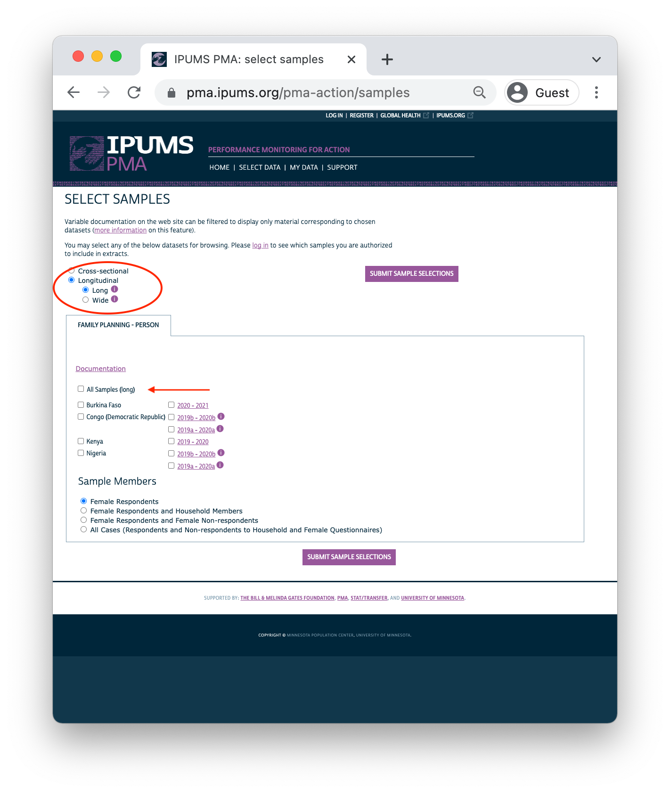
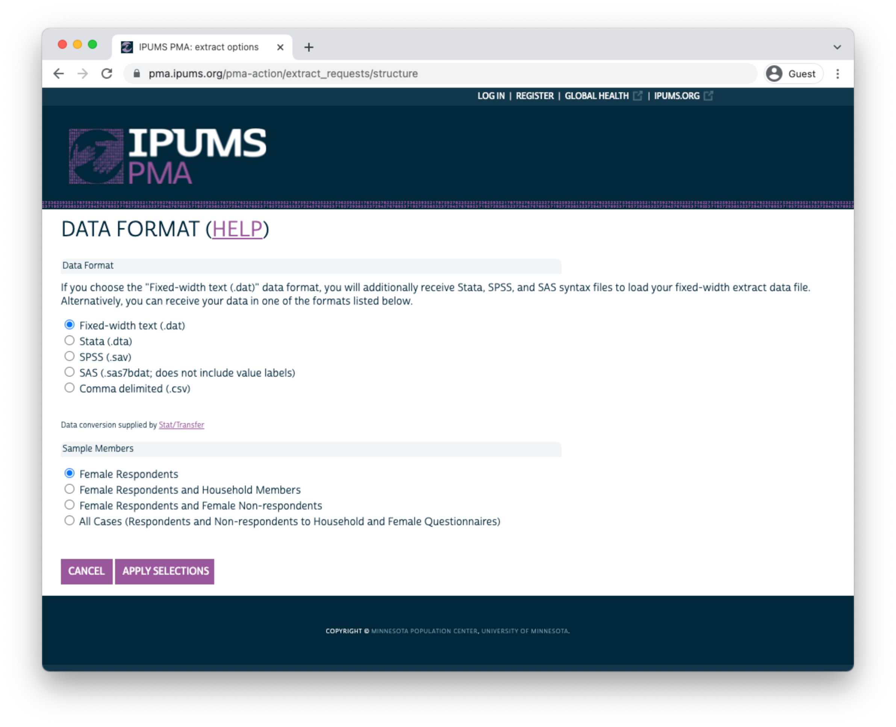
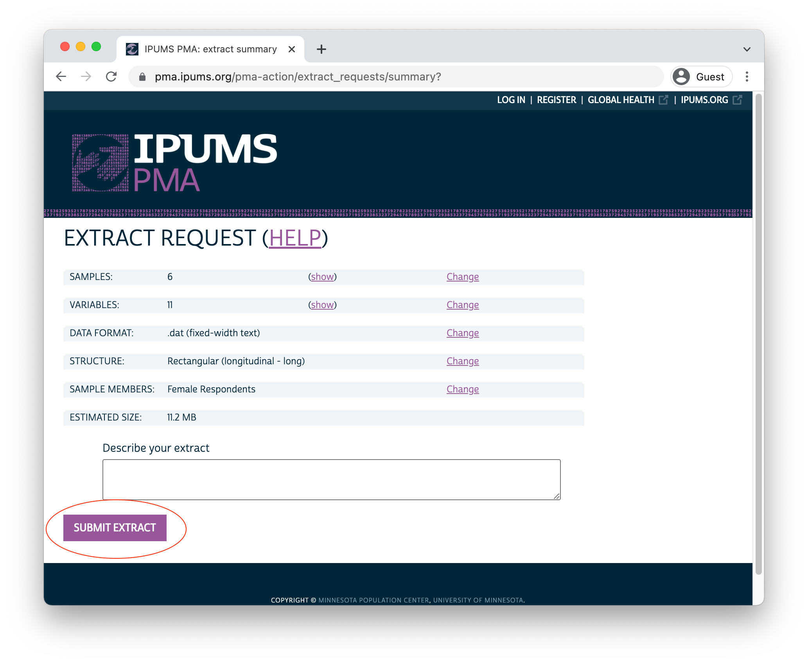
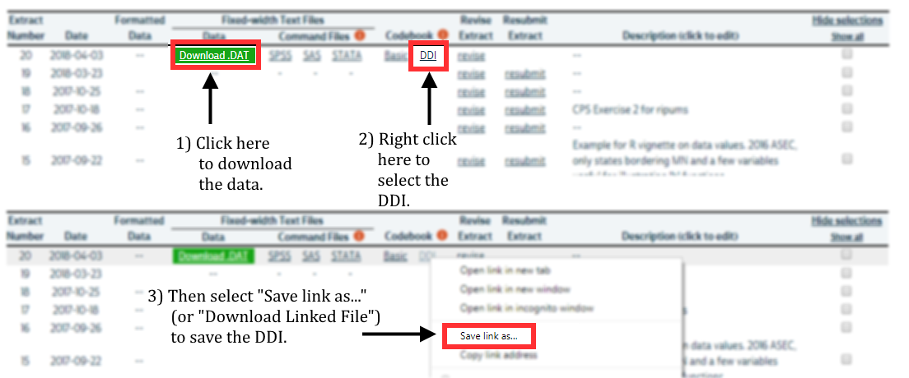

When we introduced new harmonized panel data from PMA in our last post, we mentioned that we’ve made big changes to the IPUMS PMA website making it easy to compare women’s responses across each phase of data collection. This includes a new option allowing users to choose whether to organize panel data in either long or wide format. In this post, we’ll practice building a data extract in both formats and discuss the advantages of each.
Getting Started
PMA panel data represent women aged 15-49 from sampled households in eight participating countries. IPUMS PMA makes it possible to combine data from multiple samples from the same unit of analysis: you’ll need to select the Family Planning topic under the Person unit of analysis to begin browsing available samples and variables.


Sample Selection
Once you’ve selected the Family Planning option, you’ll next need to choose between cross-sectional or longitudinal samples. Cross-sectional samples are selected by default; these are nationally or sub-nationally representative samples collected each year dating backward as far as 2013.

Longitudinal samples are only available from 2019 onward, and they include all of the available phases for each sampled country (sub-nationally representative samples for DRC and Nigeria are listed separately). You’ll only find longitudinal samples for countries where Phase 2 data has been made available; Phase 1 data for Cote d’Ivoire, India, and Uganda can currently be found under the Cross-sectional sample menu (Phase 2 data will be released soon!).
Clicking the Longitudinal button reveals options for either long or wide format. You’ll find the same samples available in either case:

Important: if you decide to change formats after selecting variables, your Data Cart will be emptied and you’ll need to begin again from scratch.

After you’ve selected one of the available longitudinal formats, choose one or more samples listed below. There are also several Sample Members options listed:
- Female Respondents only includes women who completed all or part of a Female Questionnaire. This option selects all members of the panel study. In addition, it includes women who only participated in only one phase - we will demonstrate how to identify and drop these cases below.1
- Female Respondents and Household Members adds records for all other members of a Female Respondent’s household. These household members did not complete the Female Questionnaire, but were listed on the household roster provided by the respondent to a Household Questionnaire. Basic demographic variables are available for each household member, as are common wealth, water, sanitation, and other variables shared for all members of the same household.
- Female Respondents and Female Non-respondents includes all women who were eligible to participate in a Female Questionnaire. Eligible women are those age 15-49 who were listed on the roster collected in a Household Questionnaire. If an eligible woman declined the Female Questionnaire or was not available, variables associated with that questionnaire will be coded “Not interviewed (female questionnaire)”.
- All Cases includes all members listed on the household roster from a Household Questionnaire. If the Household Questionnaire was declined or if no respondent was available, any panel member appearing in other phases of the study will be coded “Not interviewed (household questionnaire)” for variables associated with the missing Household Questionnaire.

After you’ve selected samples and sample members for your extract, click the “Submit Sample Selections” button to return to the main data browsing menu.
Variable Selection
You can browse IPUMS PMA variables by topic or alphabetically by name, or you can search for a particular term in a variable name, label, value labels, or description.

In this example, we’ll select the Discontinuation of Family Planning topic. The availability of each associated variable is shown in a table containing all of the samples we’ve selected.
Xindicates that the variable is available for all phases/indicates that the variable is available for one phase-indicates that the variable is not available for any phase
You can click the + button to add a variable to your cart, or click a variable name to learn more.

Let’s take a look at the variable PREGNANT. You’ll find the variable name and label shown at the top of the page. Below, you’ll see several tabs beginning with the CODES tab. For discrete variables, this tab shows all of the available codes and value labels associated with each response. You’ll also see the same X, /, and - symbols in a table indicating the availability of each response in each sample.

Above, there are no responses for “Not interviewed (female questionnaire)” and “Not interviewed (household questionnaire)”; this is because only samples members included in a “Female Respondents” extract are displayed by default. If we instead choose “All Cases”, this variable will include those response options because we’ll include every person listed on the household roster (even if the Household or Female Questionnaire was not completed).

The symbol / again indicates that a particular response is available for some - but not all - phases of the study. For PREGNANCY it indicates that one of the options was either unavailable or was not selected by any sample respondents in a particular phase. If a variable was not included in all phases of the study, all response options will be marked with this symbol. For example, consider the variable COVIDCONCERN, indicating the respondent’s level of concern about becoming infected with COVID-19.

Because Phase 1 questionnaires were administered prior to the emergence of COVID-19, this variable only appeared on Phase 2 questionnaires. The symbol / indicates limited availability across phases.
You’ll find a detailed description for each variable on the DESCRIPTION tab. This tab also indicates whether a particular question appeared on the Household or Female Questionnaire.

The COMPARABILITY tab describes important differences between samples. Additionally, it may contain information about similar variables appearing in DHS samples provided by IPUMS DHS.

The UNIVERSE tab describes selection criteria for this question. In this case, there are some differences between samples:
- In DRC samples, all women aged 15-49 received this question.
- For all other samples, the question was skipped if any such woman previously indicated that she was menopausal or had a hysterectomy.

The AVAILABILITY tab shows all other samples (including cross-sectional samples) where this variable is available.

Finally, you’ll find the full text of each question on the QUESTIONNAIRE TEXT tab. Each phase of the survey is shown separately, and you may click the “view entire document: text” link to view the complete questionnaire for a particular sample in any given phase.

Use the buttons at the top of this page to add the variable to your Data Cart, or to “VIEW CART” and begin checkout.

Loading an Extract into R
Your Data Cart shows all of the variables you’ve selected, plus several “preselected” variables that will be automatically included in your extract. Click the “CREATE DATA EXTRACT” button to prepare your download.

Before you submit an extract request, you’ll have the opportunity to choose a “Data Format”. R users should selected Fixed-width text (.dat) - you’ll notice that data formatted for Stata, SPSS, and SAS are also available. CSV files are provided, but not recommended. (If you wish to change Sample Members, you may do so again here.)


Click “APPLY SELECTIONS” to return to the previous screen. There, you may add a description and then proceed to the download page.

After a few moments, you’ll receive an email indicating that your extract has been created. You’ll need to obtain two files from the download page:
- Click the green “Download DAT” button to download the data file. You’ll receive a file with a number like “pma_00001.dat.gz”.
- Right click on “DDI” and click “Save link as”. You’ll receive a corresponding XML file like “pma_00001.xml”.

Place both files in a folder that R can use as its working directory. We strongly recommend using RStudio projects to manage all of the files and analysis scripts used for a particular research project. We’ll place our files in a subfolder called “data” within our own RStudio project folder.
The ipumsr package offers the easiest way to import an IPUMS PMA extract into R. You can install it from CRAN like so:
install.packages("ipumsr")
After installation, you’ll be able to load ipumsr and use the function read_ipums_micro to import your data extract. We’ll now demonstrate loading both a long and a wide extract, and we’ll take a brief look at the structure of each.
To do so, we’ll use functions from the tidyverse family of R packages. You can install all of the tidyverse packages in a single step:
install.packages("tidyverse")
Once per session, you’ll need to load the ipumsr and tidyverse packages into R.
Long Data Structure
We’ve downloaded a long data extract (Female Respondents only) and saved it in a folder called “data” in our working directory. We’ll now load it into R as an object called long.
long <- read_ipums_micro(
ddi = "data/pma_00095.xml",
data = "data/pma_00095.dat.gz"
)
In a long extract, data from each phase will be organized in separate rows. Here, responses from three panel members are shown:
long %>%
filter(FQINSTID %>% str_starts("011") | FQINSTID %>% str_starts("015")) %>%
arrange(FQINSTID) %>%
select(FQINSTID, PHASE, AGE, PANELWOMAN)
# A tibble: 6 × 4
FQINSTID PHASE AGE PANELWOMAN
<chr> <int+lbl> <int+lbl> <int+lbl>
1 011W5S0HN91I4H4I3T9JCMBHB 1 [Baseline] 29 NA
2 011W5S0HN91I4H4I3T9JCMBHB 2 [First follow up] 30 1 [Yes]
3 015NP6FJTIA98FYCBBBS1FOF7 1 [Baseline] 47 NA
4 015NP6FJTIA98FYCBBBS1FOF7 2 [First follow up] 48 1 [Yes]
5 015WYNNO2WXHH6JA4HA9PL1MR 1 [Baseline] 20 NA
6 015WYNNO2WXHH6JA4HA9PL1MR 2 [First follow up] 21 1 [Yes]Each panel member receives a unique ID shown in FQINSTID. The variable PHASE shows that each woman’s responses to the Phase 1 Female Questionnaire appears in the first row, while her Phase 2 responses appear in the second. AGE shows each woman’s age when she completed the Female Questionnaire for each phase.
PANELWOMAN indicates whether the woman completed all or part of the Female Questionnaire in a prior phase, and that she’d agreed to continue participating in the panel study at that time. The value NA appears in the rows for Phase 1, as PANELWOMAN was not included in Phase 1 surveys.
We mentioned above that you’ll also include responses from some non-panel members when you request an extract with Female Respondents. These include women who did not complete all or part the Female Questionnaire in a prior phase, as indicated by PANELWOMAN. These women are not assigned a value for FQINSTID - instead, you’ll find an empty string:
# A tibble: 3 × 4
PHASE PANELWOMAN `FQINSTID == ""` n
<int+lbl> <int+lbl> <lgl> <int>
1 1 [Baseline] NA FALSE 23591
2 2 [First follow up] 0 [No] TRUE 6586
3 2 [First follow up] 1 [Yes] FALSE 18194For most longitudinal analysis applications, you’ll need to drop non-panel members together with any women who did not fully complete the Phase 2 Female Questionnaire. We’ll demonstrate using group_by to ensure that there is one row for every FQINSTID where PHASE == 1 and another row where PHASE == 2 & RESULTFQ == 1.
The PMA Longitudinal Briefs published for each sample also include only members of the de facto population. These are women who slept in the household during the night prior to the interview for each Household Questionnaire, such that RESIDENT takes the value 11 or 22. We’ll use group_by again to include only de facto women from both phases.
Following these steps, you can check the size of each analytic sample like so:
# A tibble: 12 × 5
COUNTRY GEOCD GEONG PHASE n
<int+lbl> <int+lbl> <int+lb> <int+lbl> <int>
1 1 [Burkina Faso] NA NA 1 [Basel… 5212
2 1 [Burkina Faso] NA NA 2 [First… 5212
3 2 [Congo, Democratic Republic] 1 [Kinsha… NA 1 [Basel… 1973
4 2 [Congo, Democratic Republic] 1 [Kinsha… NA 2 [First… 1973
5 2 [Congo, Democratic Republic] 2 [Kongo … NA 1 [Basel… 1514
6 2 [Congo, Democratic Republic] 2 [Kongo … NA 2 [First… 1514
7 7 [Kenya] NA NA 1 [Basel… 6939
8 7 [Kenya] NA NA 2 [First… 6939
9 9 [Nigeria] NA 2 [Lag… 1 [Basel… 1089
10 9 [Nigeria] NA 2 [Lag… 2 [First… 1089
11 9 [Nigeria] NA 4 [Kan… 1 [Basel… 998
12 9 [Nigeria] NA 4 [Kan… 2 [First… 998Wide Data Structure
We’ve also downloaded a wide data extract (Female Respondents only) and saved it in the “data” folder in our working directory. We’ll also load this extract into R as an object named wide.
wide <- read_ipums_micro(
ddi = "data/pma_00084.xml",
data = "data/pma_00084.dat.gz"
)
In a wide extract, all of the responses from one woman appear in the same row. The IPUMS extract system appends a numeric suffix to each variable name corresponding with the phase from which it was drawn. Consider our three example panel members again:
wide %>%
filter(FQINSTID %>% str_starts("011") | FQINSTID %>% str_starts("015")) %>%
select(FQINSTID, AGE_1, AGE_2, PANELWOMAN_1, PANELWOMAN_2)
# A tibble: 3 × 5
FQINSTID AGE_1 AGE_2 PANELWOMAN_1 PANELWOMAN_2
<chr> <int+lbl> <int+> <int+lbl> <int+lbl>
1 011W5S0HN91I4H4I3T9JCMBHB 29 30 NA 1 [Yes]
2 015NP6FJTIA98FYCBBBS1FOF7 47 48 NA 1 [Yes]
3 015WYNNO2WXHH6JA4HA9PL1MR 20 21 NA 1 [Yes]Each panel member has one unique ID shown in FQINSTID. However, AGE is parsed into two columns: AGE_1 shows each woman’s age at Phase 1, and AGE_2 shows her age at Phase 2.
As we’ve discussed, PANELWOMAN is not available for Phase 1, as it indicates whether the woman completed all or part of the Female Questionnaire in a prior phase. For this reason, all values in PANELWOMAN_1 are NA. Most variables are copied once for each phase, even if they - like PANELWOMAN_1 - are not available for all phases.
You might expect the total length of a wide extract to be half the length of a corresponding long extract. This is not the case! A wide extract includes one row for each woman who completed all or part of the Female Questionnaire for any phase - you’ll find placeholder columns for phases where the interview was not conducted.
wide %>%
filter(FQINSTID == "0C8VQU6B03BXLAVVZ8SB90EKQ") %>%
select(RESULTFQ_1, AGE_1, RESULTFQ_2, AGE_2)
# A tibble: 1 × 4
RESULTFQ_1 AGE_1 RESULTFQ_2 AGE_2
<int+lbl> <int+lbl> <int+lbl> <int+lbl>
1 1 [Completed] 31 2 [Not at home] 95 [Not interviewed (female…In a long extract, rows for the missing phase are dropped. In this example, the woman was “not at home” for the Phase 2 Female Questionnaire. When we select a long extract containing only Female Respondents, her Phase 2 row is excluded automatically (it will be included if you request an extract containing Female Respondents and Female Non-respondents).
# A tibble: 1 × 3
PHASE RESULTFQ AGE
<int+lbl> <int+lbl> <int+lbl>
1 1 [Baseline] 1 [Completed] 31Again: for most longitudinal analysis applications, you’ll need to remove cases where women were not interviewed for Phase 1 or where the Phase 2 Female Questionnaire was not completed:
The de facto population appearing in PMA Longitudinal Briefs is defined in wide extracts by cases where the values 11 or 12 appear in both RESIDENT_1 and RESIDENT_2:
Following these steps, each analytic sample contains the same number of cases shown in the final long format extract above.
# A tibble: 6 × 4
# Groups: COUNTRY, GEOCD, GEONG [6]
COUNTRY GEOCD GEONG n
<int+lbl> <int+lbl> <int+lbl> <int>
1 1 [Burkina Faso] NA NA 5212
2 2 [Congo, Democratic Republic] 1 [Kinshasa] NA 1973
3 2 [Congo, Democratic Republic] 2 [Kongo Central] NA 1514
4 7 [Kenya] NA NA 6939
5 9 [Nigeria] NA 2 [Lagos] 1089
6 9 [Nigeria] NA 4 [Kano] 998Which format is best for me?
The choice between long and wide formats ultimately depends on your research objectives.
Many data manipulation tasks, for example, are faster and easier to perform in the wide format. In the example above, we needed to identify women who completed a Female Questionnaire and were members of the de facto population in both phases. In the long format, we first had to group the data by FQINSTID with group_by, thereby ensuring that a Phase 1 and Phase 2 check could be performed for each woman. In preparing for this post, this approach took about 36.5 seconds. By comparison, the same task was achieved without group_by in wide format in just 0.16 seconds. If your workflow requires multiple comparisons between phases, the wide format may be the best choice!
On the other hand, many of the longitudinal modeling packages available for R require data to be in a long format - this includes both the survival package for Cox regression and the lme4 package for multilevel models. Users who prefer the wide format for data cleaning and exploration can manually switch to long format with help from pivot_longer, for example:
# A tibble: 17,725 × 5
FQINSTID AGE_1 PREGNANT_1 AGE_2 PREGNANT_2
<chr> <int+l> <int+lbl> <int+l> <int+lbl>
1 uuid:0005f6d7-b7cd-46f6-8a6f… 30 0 [No] 31 0 [No]
2 uuid:0006cb76-09d1-4f2a-a92d… 34 1 [Yes] 34 0 [No]
3 uuid:00204481-5cae-4188-abb3… 17 0 [No] 18 0 [No]
4 uuid:002398f4-8f2d-4095-8019… 29 0 [No] 29 0 [No]
5 uuid:00407300-c1e6-4e24-ab8d… 25 0 [No] 25 0 [No]
6 uuid:00413ed1-d176-44fb-a232… 32 0 [No] 32 0 [No]
7 uuid:0048a052-66ff-4ed5-9fa9… 38 0 [No] 39 0 [No]
8 uuid:004d80f0-90c6-4b77-bb4d… 38 0 [No] 38 0 [No]
9 uuid:00504cf5-870c-4a02-aad7… 33 0 [No] 34 0 [No]
10 uuid:00534792-fb84-47b4-8606… 24 0 [No] 25 0 [No]
# … with 17,715 more rowsWith pivot_longer, you can strip the suffix 1 or 2 from each variable, placing the result in a new column called PHASE. Then, we’ll pivot each woman’s age and pregnancy status from 2 wide columns into a single long one.
wide %>%
select(FQINSTID, AGE_1, PREGNANT_1, AGE_2, PREGNANT_2) %>%
pivot_longer(
!FQINSTID,
names_pattern = "(.*)_([1-2])",
names_to = c(".value", "PHASE")
)
# A tibble: 35,450 × 4
FQINSTID PHASE AGE PREGNANT
<chr> <chr> <int+lbl> <int+lbl>
1 uuid:0005f6d7-b7cd-46f6-8a6f-5f051b6ab4a2 1 30 0 [No]
2 uuid:0005f6d7-b7cd-46f6-8a6f-5f051b6ab4a2 2 31 0 [No]
3 uuid:0006cb76-09d1-4f2a-a92d-c12fcaf194b5 1 34 1 [Yes]
4 uuid:0006cb76-09d1-4f2a-a92d-c12fcaf194b5 2 34 0 [No]
5 uuid:00204481-5cae-4188-abb3-0367d0ed9c14 1 17 0 [No]
6 uuid:00204481-5cae-4188-abb3-0367d0ed9c14 2 18 0 [No]
7 uuid:002398f4-8f2d-4095-8019-c306d39cf2b9 1 29 0 [No]
8 uuid:002398f4-8f2d-4095-8019-c306d39cf2b9 2 29 0 [No]
9 uuid:00407300-c1e6-4e24-ab8d-8af5e1ca85a6 1 25 0 [No]
10 uuid:00407300-c1e6-4e24-ab8d-8af5e1ca85a6 2 25 0 [No]
# … with 35,440 more rowsManipulating patterns in variable names with pivot_longer takes practice, and we imagine many users will find it easier to simply work with data in the long format from the beginning.
Fortunately, the updated IPUMS PMA extract system makes it easy to select the samples, sample members, and variables that matter to your particular research question. New choices for long and wide data formats save an additional data cleaning step, allowing you to jump into longitudinal analysis as quickly as possible.
Women who completed all or part of the Female Questionnaire in more than one phase of the study are considered panel members. Women who completed it only at Phase 1 are included in a longitudinal extract, but they are not panel members. Likewise, women who completed it for the first time at Phase 2 are included, but are not panel members if they 1) will reach age 50 before Phase 3, or 2) declined the invitation to participate again in Phase 3.↩︎